coord_3d is a 3D coordinate system that creates a 2D view of 3D data.
This is the essential core component of any plot made with ggcube.
It supports rotation, perspective projection, and options for controlling plot
aspect ratios, panel selection, axis label placement, and lighting.
Arguments
- roll, pitch, yaw
Rotation around x, y, and z axes, respectively, in degrees. Positive values rotate the near face of the plot "downward", "rightward", and clockwise, respectively.
- persp
Logical indicating whether to apply perspective projection. When
TRUE(the default), objects farther from the viewer appear smaller. WhenFALSE, produces an orthographic projection in which lines that are parallel in 3D space render as parallel in the plot.- dist
Distance from viewer to center of the data cube. Only used when
persp = TRUE. Larger values create less perspective distortion. Default is 2. Values less than 1 are allowed but can be problematic for rendering.- expand
Logical indicating whether to expand axis ranges beyond the data range, similar to standard ggplot2 behavior. If
TRUE(the default), expansion behavior can be controlled using standard axis scaling functions, e.g.... + scale_x_continuous(expand = expansion(.5)).- clip
Character string indicating clipping behavior. Use
"off"(the default, recommended for some 3D plots) to allow drawing outside the plot panel.- panels
Character vector specifying which panels to render, including one or more of the following:
"background"(the default),"foreground": faces laying behind or in front of the cube's interior volume, respectively. These panels vary depending on plot rotation."xmin","ymax", etc.: names of specific cube faces."all","none": display the full cube or remove all faces.
See cube_theming for details on panel styling, including transparency of foreground panels.
- xlabels, ylabels, zlabels
Character strings or length-2 character vectors specifying axis label (text and title) placement. Labels are placed inline with grid lines for the selected panel face. For each axis, there are four potential panels where labels could be placed, and two potential edges for each panel. Labels can only be placed on visible faces (see
panelsargument). Each parameter accepts:"auto"(default): Automatic edge selection based on an algorithm that prioritizes edges that are visible on the periphery of the plot and considers several attributes of face geometry for better readability.c("face1", "face2"): Manual edge specification using two adjacent face names (e.g.,c("xmin", "ymin")selects the edge shared by the xmin and ymin faces). The first face in the vector determines which face the axis labels will be aligned with, while the second face identifies which edge of this face gets labelled. Available face names are: "xmin", "xmax", "ymin", "ymax", "zmin", "zmax".
See cube_theming for details on axis label styling.
- rotate_labels
Logical indicating whether axis labels (text and titles) should automatically rotate to align with the projected axis directions. When
FALSE, uses theme text and title angle settings.- scales
Character string specifying aspect ratio behavior:
"free"(default): Each axis scales independently to fill cube space, thenratioapplies to standardized coordinates. This gives maximum visual range for each dimension."fixed": Maintains proportional relationships in raw data values, as scaled byratio. Similar tocoord_fixed()but for 3D (visual ratios match the labeled axis ranges).
- ratio
Numeric vector of length 3 specifying relative axis lengths as
c(x, y, z). Defaults toc(1, 1, 1)for equal proportions.With
scales = "free": Ratios apply to scaled cube coordinatesWith
scales = "fixed": Ratios apply to original data coordinates
- light
A lighting specification object created by
light()(see that function for details), orNULLto disable shading. Specify plot-level lighting incoord_3d()and layer-specific lighting ingeom_*3d()functions.
See also
light() for lighting specification, cube_theming for panel and
text styling, polygon_rendering for 3D-related parameters for polygon layers.
Examples
# base plot used in examples
p <- ggplot() +
geom_function_3d(
aes(fill = after_stat(z), color = after_stat(z)),
fun = function(x, y) sin(x) * cos(y),
xlim = c(-pi, pi), ylim = c(-pi, pi),
n = 50, light = light("direct", contrast = .7)) +
scale_fill_viridis_c() +
scale_color_viridis_c() +
theme(legend.position = "none")
# 3D plot with default coord settings
p + coord_3d()
# Use `pitch`, `roll`, `yaw` to control plot rotation ----------------------
# zero rotation gives view from x-y face
p + coord_3d(pitch = 0, roll = 0, yaw = 0)
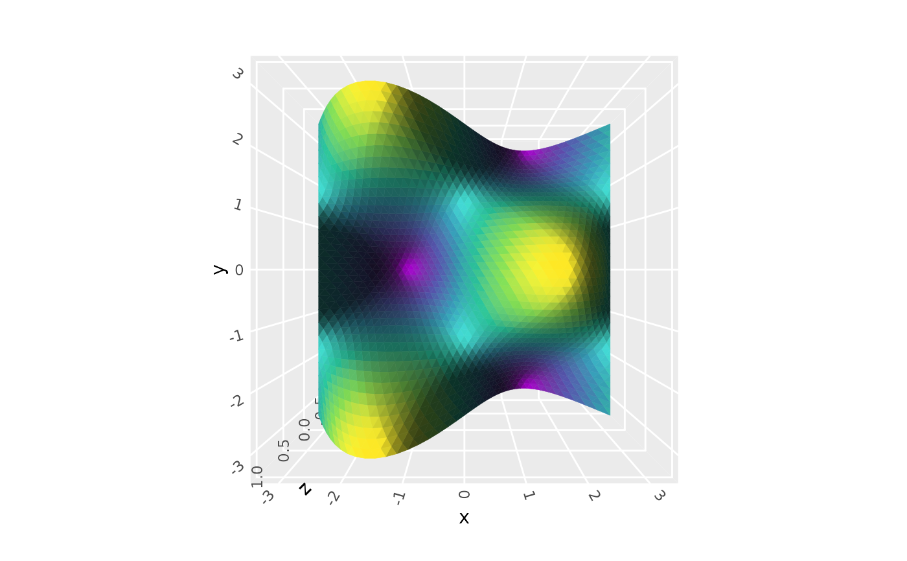
# pitch rotates plot around y axis
p + coord_3d(pitch = 30, roll = 0, yaw = 0)
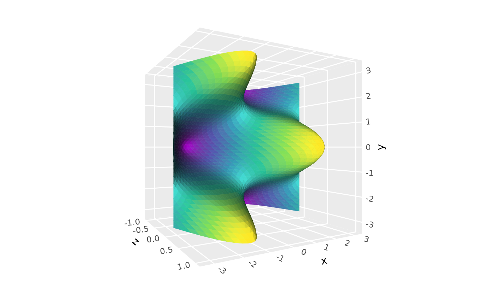
# roll rotates plot around x axis
p + coord_3d(pitch = 0, roll = 30, yaw = 0)
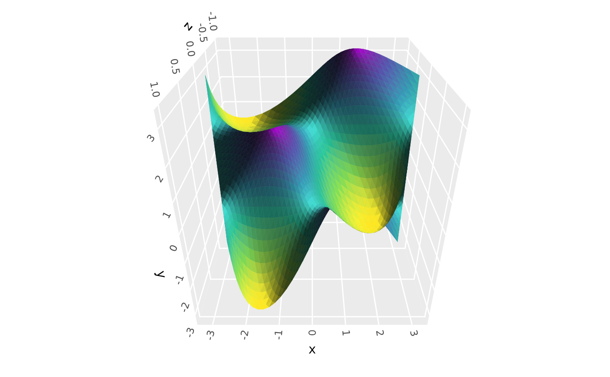
# yaw rotates plot around z axis
p + coord_3d(pitch = 0, roll = 0, yaw = 30)
 # combine them to achieve arbitrary rotations
p + coord_3d(pitch = 20, roll = 40, yaw = 60)
# combine them to achieve arbitrary rotations
p + coord_3d(pitch = 20, roll = 40, yaw = 60)
 # Use `persp` and `dist` to control perspective effects --------------------
# strong perspective effect as if seen from very close
p + coord_3d(dist = 1)
# Use `persp` and `dist` to control perspective effects --------------------
# strong perspective effect as if seen from very close
p + coord_3d(dist = 1)
 # weaker perspective effects as if seen from far away
p + coord_3d(dist = 3)
# weaker perspective effects as if seen from far away
p + coord_3d(dist = 3)
 # orthographic projection (`dist = Inf` would be equivalent but it errors)
p + coord_3d(persp = FALSE)
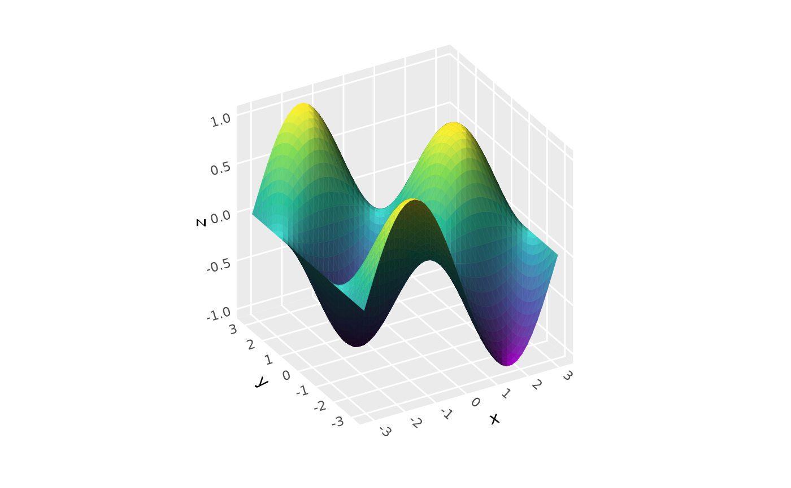
# Use `scales` and `ratio` to control aspect ratio -------------------------
# The default "free" scales shown above give cube with maximum visual range.
# Use "fixed" scales to make figure match data scales, like coord_fixed.
p + coord_3d(scales = "fixed")
# orthographic projection (`dist = Inf` would be equivalent but it errors)
p + coord_3d(persp = FALSE)
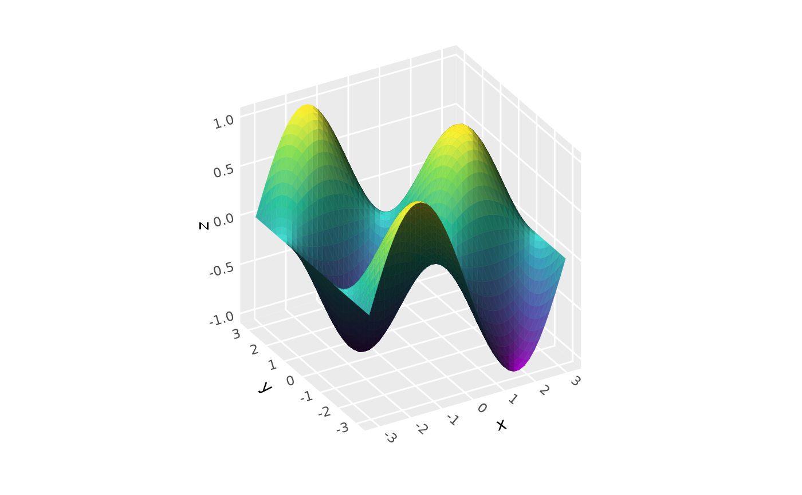
# Use `scales` and `ratio` to control aspect ratio -------------------------
# The default "free" scales shown above give cube with maximum visual range.
# Use "fixed" scales to make figure match data scales, like coord_fixed.
p + coord_3d(scales = "fixed")
 # Custom aspect ratios: make y twice as long visually
p + coord_3d(scales = "free", ratio = c(1, 2, 1))
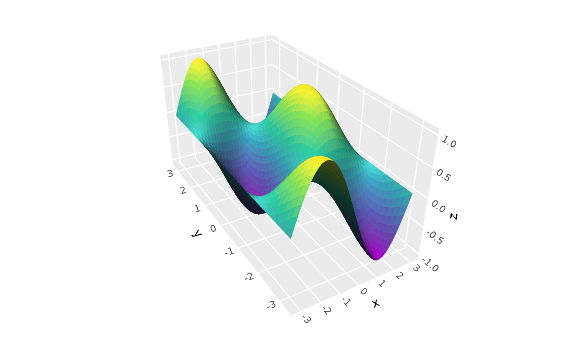
# Combine behaviors: fix scales and make y twice as long
p + coord_3d(scales = "fixed", ratio = c(1, 2, 1))
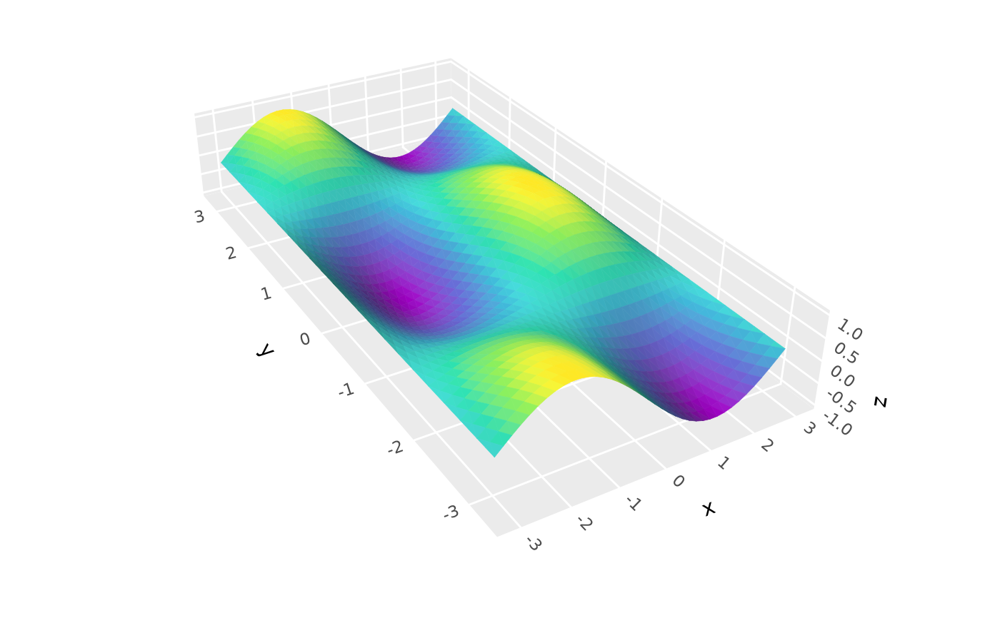
# Use `panels` to select which cube faces to render ------------------------
p + coord_3d(panels = c("xmin", "xmax", "zmax"))
# Custom aspect ratios: make y twice as long visually
p + coord_3d(scales = "free", ratio = c(1, 2, 1))
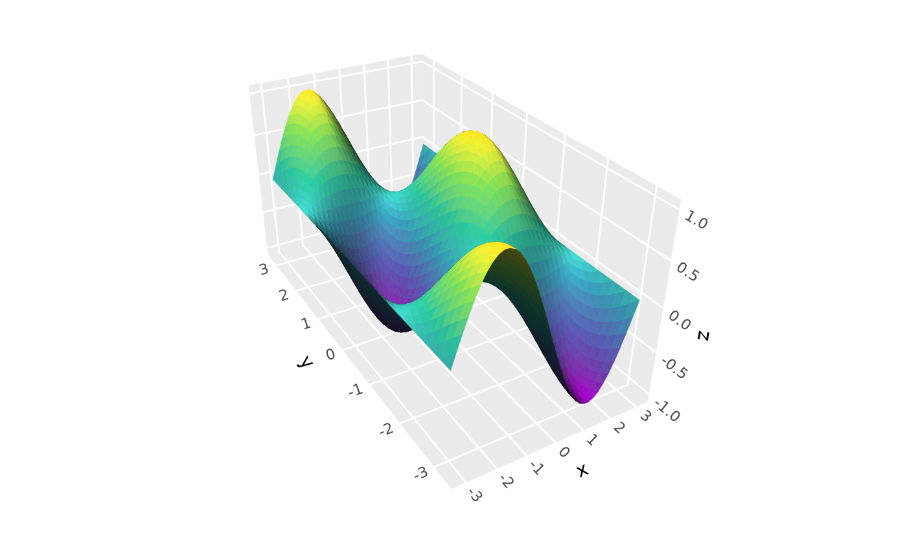
# Combine behaviors: fix scales and make y twice as long
p + coord_3d(scales = "fixed", ratio = c(1, 2, 1))
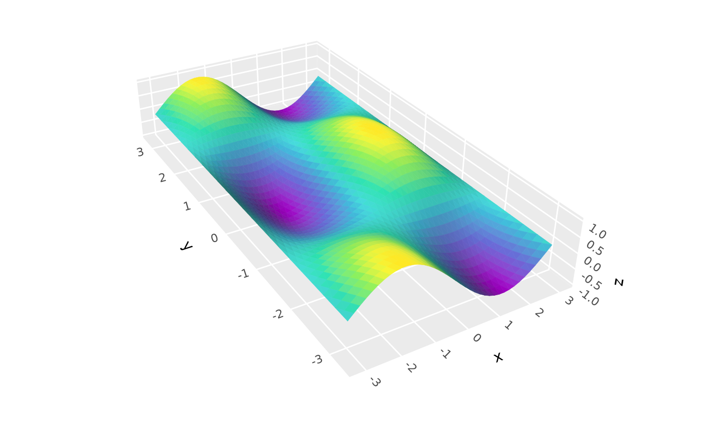
# Use `panels` to select which cube faces to render ------------------------
p + coord_3d(panels = c("xmin", "xmax", "zmax"))
 # foreground panels default to 20% opaque (can be styled using `theme()`)
p + coord_3d(panels = "all")
# foreground panels default to 20% opaque (can be styled using `theme()`)
p + coord_3d(panels = "all")
 # Use label params to control axis text placement and rotation -------------
p + coord_3d(xlabels = c("ymax", "zmax"),
zlabels = c("xmax", "ymin"))
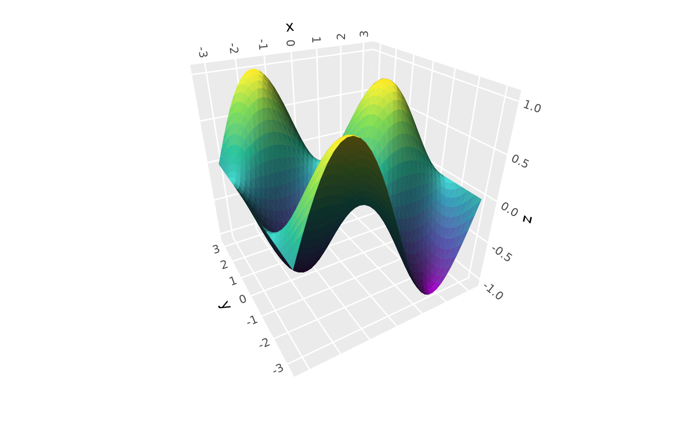
p + coord_3d(rotate_labels = FALSE)
# Use label params to control axis text placement and rotation -------------
p + coord_3d(xlabels = c("ymax", "zmax"),
zlabels = c("xmax", "ymin"))
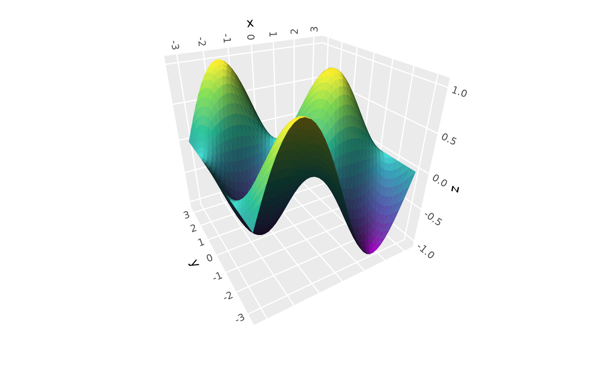
p + coord_3d(rotate_labels = FALSE)